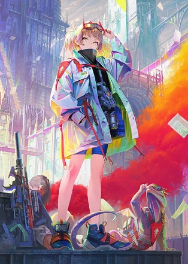
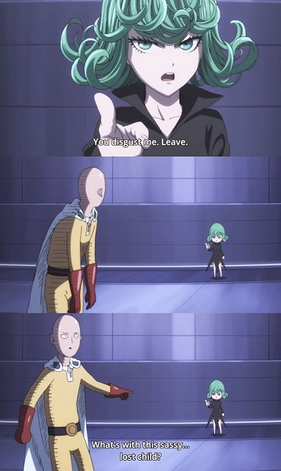
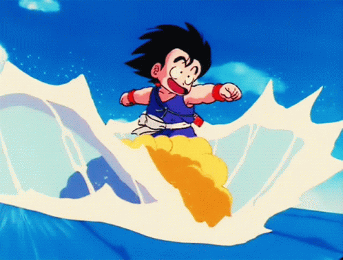
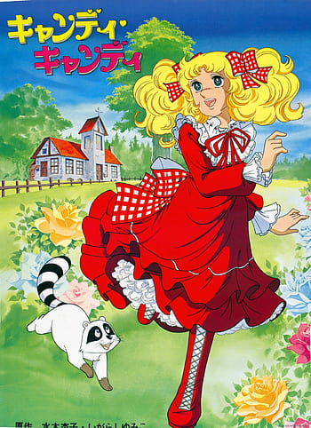
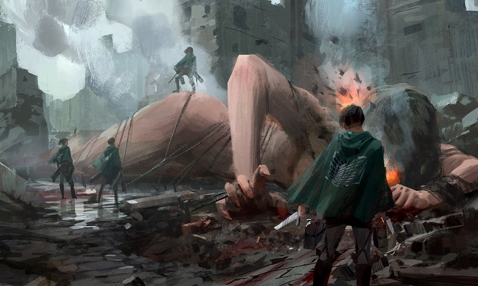
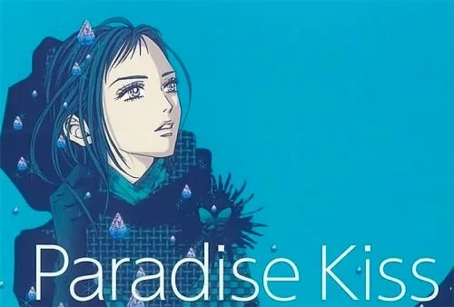
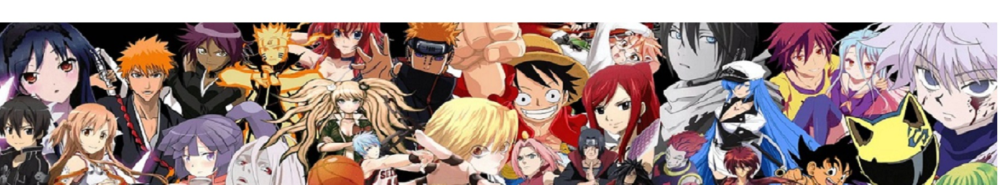

The anime describes the adventures of Goku, an alien of the Saiyan race, willing to protect the earth from other beings who wish to conquer it. The Dragon Ball name comes from some magical spheres that, when gathered, invoke a dragon capable of granting wishes.

ITS ANIME BETTER THAN MANGA ?
We must understand that the manga is the author's original work, and anime is a promotional object of the manga. Therefore we can not say which is better, but if we focus on the animation, we can find fantastic works which may not have got the recognition they deserve.
STUDIO GHIBLI
One of these is the Ghibli studio. This production company has been responsible for films that transcend reality and have achieved worldwide recognition. A great example is Chihiro's journey story(spirited away); its animation and theme make it recognized as one of the best movies of the century, according to the New York times.
ANIME DEMOGRAFIC
The demography of anime refers to the population's demand for specific content: for children, adolescents, men, or ladies. There are five demographics; we will explain each of them and give their most notable example.
KOMODO
Komodo literally means child; this demographic was created for children between 5-11 years old; this style is characteristic of innocence, affection, and cuteness. One of its leading exponents is Doraemon.


SHONEN
The word shonen makes an illusion of the term young boy, referring to adolescents, it is an age range between 12-17 years; the vast majority of these animes have a protagonist with a desire to improve, determination, effort, and perseverance, The greatest exponent of this demographic is Dragon Ball. This anime revolutionized the world of shonen, reaching all corners of the planet.

SHOJO
Shojo alludes to the term adolescent girls, aimed at girls between 12 and 17 years old. The stories of these animes are led by girls, combining romance with fantasy; a great exponent is Kandy Kandy.

SEINEN
This demographic is dedicated to men of legal age, where highly complex social issues are discussed, with a severe tone and sensitive content. One of its exponents is the anime Attack on Titans, which in recent years has been very popular, very crude and bloody but with intense story development, it is one hundred percent recommended if you tolerate blood and the persecution of important characters

The teenager Eren Jaeger, who suffers his hometown's destruction and the loss of his mother due to Titans, will dedicate his time to destroy them and end this threat that endangers the survival of humanity.

JOSEI
This demographic is looking for a mature female audience to expose daily life issues in a dramatic way wrapped in romance or sexual themes. One of the most representative works is paradise kiss.

© 2022 Javier Torruella Alegria